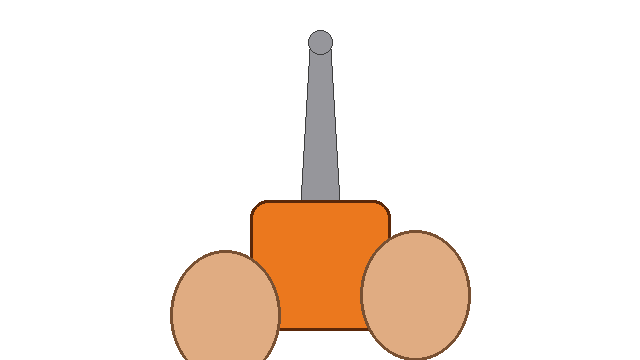

Урони дерево в зелёный сектор.
Дерево перекидывается через недопил — несрезанную древесину.
Сделай подпил со стороны, куда валишь, потом пили с обратной стороны навстречу ему.
Дерево кривое, крона набок — туда его и тянет вес. Ветер раскачивает.
Перерезанное волокно не держит: держит только недопил, и дерево идёт поперёк него, как дверь на петле.
В углу — дерево сбоку: видно, клонится ли ствол к тебе или от тебя.
Под прицелом — ширина щели пропила: сужается — дерево давит на пилу, расширяется — уходит от неё.
WASD: ходить · Shift: бежать · мышь: смотреть
У ствола: ЛКМ — приставить пилу, мышь — наклон и поворот полотна,
ЛКМ (зажать) — пилить, S — убрать пилу · R: новое дерево
Кликни, чтобы начать